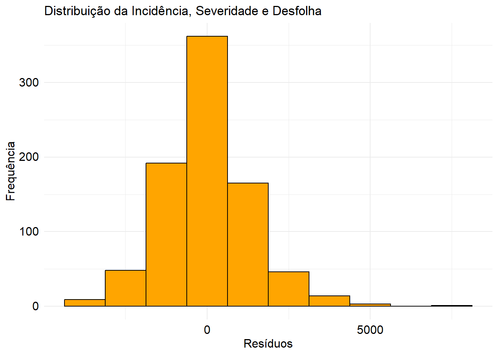
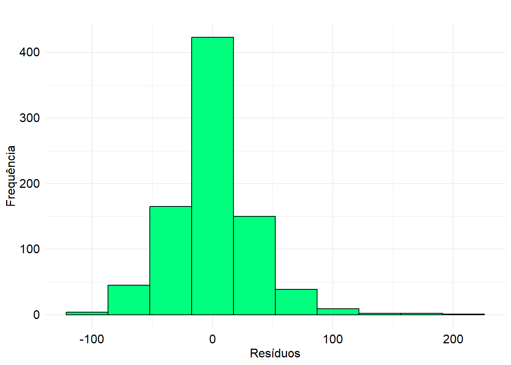
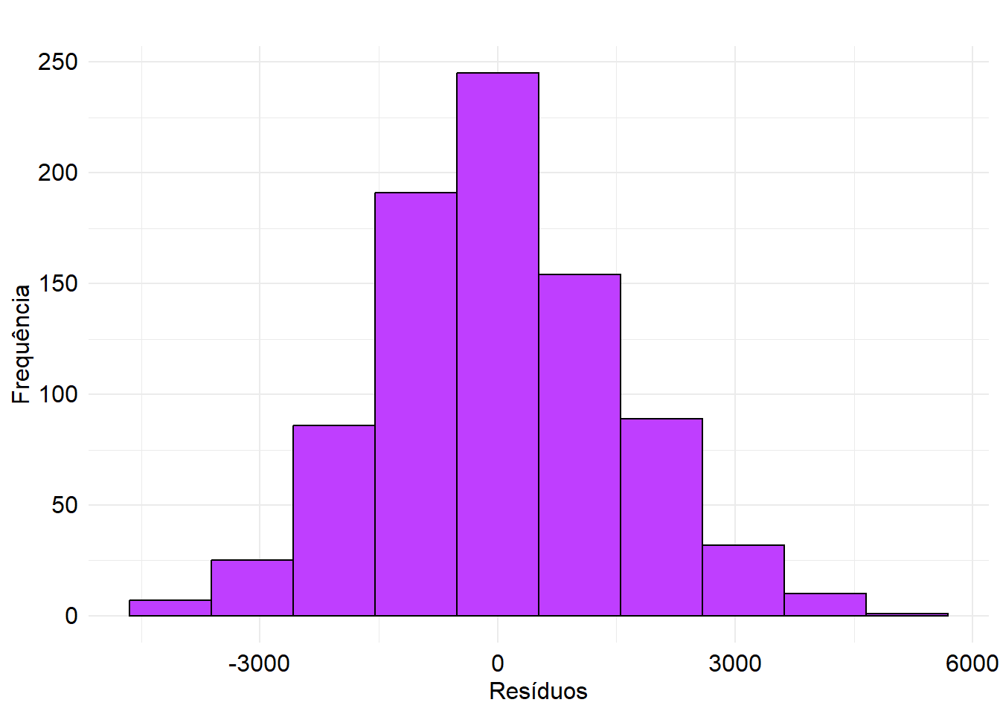
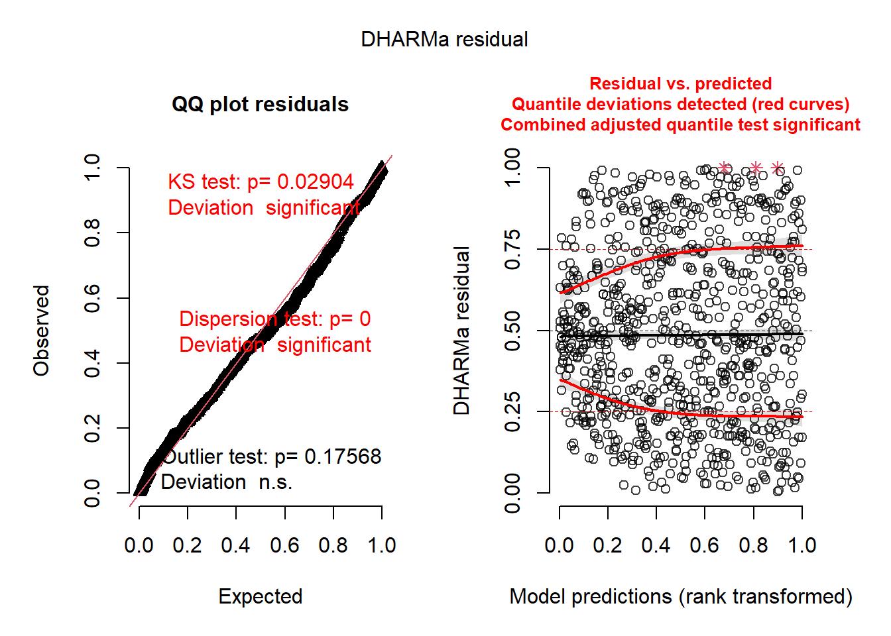

── Conflicts ────────────────────────────────────────── tidyverse_conflicts() ──
✖ dplyr::filter() masks stats::filter()
✖ dplyr::lag() masks stats::lag()
ℹ Use the conflicted package (<http://conflicted.r-lib.org/>) to force all conflicts to become errors
Rows: 840 Columns: 5
── Column specification ────────────────────────────────────────────────────────
Delimiter: ","
dbl (5): genotype, repetition, incidence, severity, defoliation
ℹ Use `spec()` to retrieve the full column specification for this data.
ℹ Specify the column types or set `show_col_types = FALSE` to quiet this message.
Após calcular as variáveis de resposta da AACPD para a incidência, severidade e desfolha, avaliou-se o ANOVA (One-way ANOVA). Para isso, formulamos as seguintes hipóteses:
Hipótese nula (Ho): propõe que todas as médias são iguais.
Hipótese alternativa (Ha): sugere que pelo menos uma média é diferente.
A significância dos resultados foi avaliada utilizando um p-valor < 0,05.
Para comparar as médias da incidência/severidade/desfolha entre os diferentes genótipos, foi utilizado a função aov. Em seguida, com summary, foi extraido um resumo do modelo ajustado que inclui os estatísticos F, valores p, graus de liberdade e somas de quadrados.
2.1 AACPD incidência
Em continuação, criamos um objeto chamado av1 para a variável inicidence, o qual conterá os dados da ANOVA.
Code
# Converter genotype a fatorAUDPC$genotype <-as.factor(AUDPC$genotype)# AUDPC incidenceav1 <-aov(incidence ~ genotype, data = AUDPC)summary(av1)
Df Sum Sq Mean Sq F value Pr(>F)
genotype 167 7.098e+09 42501668 18.91 <2e-16 ***
Residuals 672 1.510e+09 2247179
---
Signif. codes: 0 '***' 0.001 '**' 0.01 '*' 0.05 '.' 0.1 ' ' 1
Com base nas tabelas de ANOVA, interpreta-se que, com valores de p<2e-16 inferiores ao nível de significância (0,05), rejeitamos a hipótese nula e aceitamos a hipótese alternativa. Isso indica evidência estatística de que pelo menos um dos tratamentos apresenta diferença significativa na AACPD da incidência em comparação com os demais genótipos.
2.2 AACPD severidade
Em continuação, criamos um objeto chamado av2 para a variável severity, o qual conterá os dados da ANOVA.
Code
# AUDPC severityav2 <-aov(severity ~ genotype, data = AUDPC)summary(av2)
Df Sum Sq Mean Sq F value Pr(>F)
genotype 167 5629009 33707 22.41 <2e-16 ***
Residuals 672 1010538 1504
---
Signif. codes: 0 '***' 0.001 '**' 0.01 '*' 0.05 '.' 0.1 ' ' 1
Com base nos resultados da ANOVA, interpreta-se que, dado que o valor de p<2e-16 foi menor que o nível de significância de 0,05, a hipótese nula é rejeitada em favor da hipótese alternativa. Isso indica que há evidência estatística de que pelo menos um dos tratamentos apresenta uma diferença significativa na AACPD de severidade em comparação com os demais genotipos.
2.3 AACPD desfolha
Em continuação, criamos um objeto chamado av3 para a variável defoliation, o qual conterá os dados da ANOVA.
Code
# AUDPC defoliationav3 <-aov(defoliation ~ genotype, data = AUDPC)summary(av3)
Df Sum Sq Mean Sq F value Pr(>F)
genotype 167 2.95e+09 17662242 6.38 <2e-16 ***
Residuals 672 1.86e+09 2768593
---
Signif. codes: 0 '***' 0.001 '**' 0.01 '*' 0.05 '.' 0.1 ' ' 1
A partir dos resultados da ANOVA, conclui-se que, dado que os valores de <2e-16 foram inferiores ao nível de significância (0,05), rejeita-se a hipótese nula em favor da hipótese alternativa. Isso indica que há evidência estatística de que pelo menos um dos tratamentos apresenta diferença significativa na AACPD da desfolha em comparação com os outros tratamentos.
3 Distribuição da população
Os resíduos de três modelos ANOVA foram extraídos e foram criados data frames para cada variável utilizando as funções residuals e data.frame.
Code
# Extrair resíduos das três variáveisresiduals1 <-residuals(av1)residuals2 <-residuals(av2)residuals3 <-residuals(av3)
Os dataframes residuals1.df, residuals2.df e residuals3.df contêm os resíduos dos modelos ANOVA para cada uma das três variáveis (incidência/severidade/desfolha). Esses resíduos são úteis para verificar os pressupostos do modelo, como a normalidade dos erros e a homogeneidade das variâncias. Além disso, podem ser utilizados para realizar análises adicionais, como a detecção de valores atípicos ou a avaliação da adequação do modelo.
Code
# Criar um dataframe com os resíduosresiduals1.df <-data.frame(residuals = residuals1)residuals2.df <-data.frame(residuals = residuals2)residuals3.df <-data.frame(residuals = residuals3)
Agora vamos visualizar a distribuição da população para as três variáveis de resposta. Criamos três gráficos: plot1 mostra um histograma dos resíduos do ANOVA para AACPD da incidência, avaliando sua distribuição ao redor de zero para verificar a normalidade dos resíduos. Este mesmo procedimento foi aplicado às outras duas variáveis: AACPD da severidade (plot2) e AACPD da desfolha (plot3). Esses gráficos são essenciais para validar os pressupostos do ANOVA.
Code
# Histograma AUDPC incidenciaplot1 <- residuals1.df |>ggplot(aes(x = residuals1)) +geom_histogram(bins =10, color ="black", fill ="orange") +theme_minimal() +labs(title ="Distribuição da Incidência, Severidade e Desfolha",x ="Resíduos",y ="Frequência") +theme(axis.text.x =element_text(size =12, color ="Black", hjust =0.5, vjust =1)) +theme(axis.text.y =element_text(size =12, color ="Black", hjust =1, vjust =0.4),axis.title =element_text(size =12, color ="black"))plot1

Code
# Histograma AUDPC severityplot2 <- residuals2.df |>ggplot(aes(x = residuals2)) +geom_histogram(bins =10, color ="black", fill ="#00FF7F") +theme_minimal() +labs(title ="",x ="Resíduos",y ="Frequência") +theme(axis.text.x =element_text(size =12, color ="Black", hjust =0.5, vjust =1)) +theme(axis.text.y =element_text(size =12, color ="Black", hjust =1, vjust =0.4),axis.title =element_text(size =12, color ="black"))plot2

Code
# Histograma AUDPC defoliationplot3 <- residuals3.df |>ggplot(aes(x = residuals3)) +geom_histogram(bins =10, color ="black", fill ="#BF3EFF") +theme_minimal() +labs(title ="",x ="Resíduos",y ="Frequência") +theme(axis.text.x =element_text(size =12, color ="Black", hjust =0.5, vjust =1)) +theme(axis.text.y =element_text(size =12, color ="Black", hjust =1, vjust =0.4),axis.title =element_text(size =12, color ="black"))plot3

A seguir, os gráficos criados foram unidos utilizando o pacote patchwork:
Foram avaliados os pressupostos utilizando o pacote performance e DHARMa, que analisa os resíduos dos modelos ajustados. Utilizamos os modelos av1, av2 e av3, correspondentes aos AACPD para incidência, severidade e desfolha, respectivamente.
Warning in checkModel(fittedModel): DHARMa: fittedModel not in class of
supported models. Absolutely no guarantee that this will work!

Com o suporte do pacote DHARMa, geramos gráficos visuais para avaliar os pressupostos de normalidade e homocedasticidade. Em resumo, as variáveis AACPD Incidência e AACPD Severidade não atenderam à premissa de distribuição normal dos dados (p < .001), mas atenderam à igualdade de variâncias (homocedasticidade) (p < .001; p < .001). Por outro lado, a variável AACPD desfolha atendeu aos pressupostos de normalidade e homocedasticidade (p = 0.015; p < .001). Portanto, para detectar diferenças estatísticas entre os genótipos, utilizaremos o modelo linear generalizado (GLM).
5 Modelo Linear Generalizado (GLM)
Foi utilizado o modelo linear generalizado (GLM) para determinar as diferenças significativas entre os genótipos de cafeeiro. Para esta análise, foram utilizados os pacotes faraway e MASS.
Variáveis AACPD incidência
Utilizamos a função glm para criar um modelo linear generalizado. O conjunto de dados AUDPC contém essas informações.A função summary aplicada ao objeto glm.Inc fornece um resumo detalhado do modelo ajustado. Isso também foi realizado para AACPD severidade (glm.Sev) e AACPD desfolha (glm.Def).
A comparação de médias pelo método de Scott-Knott é uma técnica estatística para agrupar médias de tratamentos ou grupos que não diferem significativamente entre si. Este método divide as médias em grupos homogêneos, maximizando as diferenças entre os grupos e minimizando as diferenças dentro de cada grupo. Para realizar análises de agrupamento de médias, foi utilizado o pacote ScottKnott e a função SK().
Variável AACPD incidência: Convertimos genotype em fator usando as.factor na coluna genotype do dataframe AUDPC (AUDPC$genotype). Em seguida, com a função with(), avaliamos expressões dentro do ambiente do dataframe AUDPC. Utilizamos a função SK() para realizar um teste de comparação múltipla (Scott-Knott) para as variáveis incidence, severidade e defoliation, em função do fator genotype, com um nível de significância de p < 0.05.
Code
# Carregar biliotecalibrary(ScottKnott)# Convertir genótipo em fatorAUDPC$genotype <-as.factor(as.character(AUDPC$genotype))class(AUDPC$genotype)
SK1 <-with(AUDPC, SK(incidence ~ genotype, sig.level =0.05, which ="genotype"))SK1
Results
Means G1 G2 G3 G4
157 11166.21 a
153 10464.53 a
73 10271.43 a
237 10254.29 a
169 9997.13 a
164 9958.57 a
150 9812.90 a
147 9784.80 a
31 9725.95 a
145 9555.38 a
15 9503.83 a
155 9490.63 a
23 9480.60 a
154 9350.00 a
101 9274.17 a
131 9273.97 a
84 9250.69 a
214 9149.29 a
48 9117.86 a
167 9117.32 a
242 9088.81 a
22 9088.10 a
114 9029.70 a
45 9024.17 a
137 8948.91 a
9 8946.03 a
81 8934.84 a
213 8912.14 a
14 8814.76 a
75 8774.86 a
133 8760.48 a
229 8713.26 a
168 8658.57 a
32 8655.83 a
100 8633.85 a
72 8550.12 a
83 8532.96 a
108 8474.92 a
5 8429.17 a
141 8417.98 a
232 8396.11 a
219 8362.30 a
21 8356.63 a
146 8349.84 a
228 8328.79 a
220 8290.07 a
66 8273.06 a
4 8208.97 a
98 8197.62 a
68 8105.16 a
8 7978.10 a
200 7971.31 a
216 7925.00 b
55 7882.90 b
61 7779.19 b
36 7755.80 b
103 7754.25 b
139 7687.14 b
126 7679.15 b
140 7638.86 b
138 7625.97 b
136 7622.02 b
152 7607.34 b
13 7602.94 b
171 7578.91 b
60 7575.40 b
233 7367.78 b
105 7342.04 b
143 7316.83 b
19 7287.50 b
160 7166.75 b
245 7107.22 b
6 7078.75 b
18 7035.63 b
17 6984.48 b
2 6903.10 b
44 6902.40 b
12 6882.19 b
25 6881.49 b
80 6843.61 b
76 6823.65 b
236 6782.34 b
3 6768.04 b
40 6751.69 b
41 6695.04 b
64 6681.03 b
142 6633.81 b
30 6550.04 b
172 6458.92 b
119 6454.89 b
49 6370.22 b
82 6338.37 b
33 6334.84 b
212 6328.73 b
161 6196.94 b
248 5888.77 b
158 5643.25 b
156 5551.79 b
24 5499.05 b
77 5421.33 b
144 5387.30 b
56 5326.79 b
159 5032.83 c
249 4934.38 c
51 4901.79 c
59 4633.85 c
199 4552.84 c
222 4543.33 c
120 4522.18 c
218 4414.86 c
163 4409.92 c
35 4406.15 c
11 4406.15 c
67 4263.27 c
165 4226.35 c
205 4223.51 c
226 3939.46 c
124 3758.35 c
71 3672.04 c
123 3650.89 c
113 3512.12 c
230 3386.81 c
29 3326.40 c
50 3247.20 c
47 3163.87 c
79 3128.29 c
162 3045.04 c
37 3016.87 c
1 2928.91 c
173 2883.15 c
174 2851.27 c
58 2785.38 c
78 2562.94 d
112 2534.84 d
166 2531.63 d
57 2515.28 d
42 2463.63 d
104 2417.48 d
28 2379.90 d
149 2366.27 d
135 2325.46 d
69 2226.51 d
43 2031.79 d
183 1985.71 d
7 1923.89 d
10 1859.35 d
27 1832.68 d
52 1798.27 d
16 1621.67 d
134 1561.81 d
130 1546.73 d
39 1489.17 d
62 1475.00 d
65 1468.10 d
63 1422.88 d
74 1321.75 d
54 1266.25 d
122 1190.95 d
34 1018.67 d
26 966.03 d
38 950.69 d
70 943.65 d
20 896.61 d
117 720.00 d
46 626.23 d
203 504.76 d
110 453.10 d
53 395.00 d
Sig.level
0.05
Statistics
lambda chisq dfchisq pvalue evmean dferror
Clus 1 765 176 147 3.3e-84 449436 672
Clus 2 263 112 89 4.7e-19 449436 672
Clus 3 49 62 46 3.4e-01 449436 672
Clus 4 52 60 44 2.0e-01 449436 672
Clus 5 204 77 58 3.8e-18 449436 672
Clus 6 37 39 26 8.2e-02 449436 672
Clus 7 36 46 32 2.8e-01 449436 672
Clusters
################# Cluster 1 ################
{G1}: 157 153 73 237 169 164 150 147 31 145 15 155 23 154 101 131 84 214 48 167 242 22 114 45 137 9 81 213 14 75 133 229 168 32 100 72 83 108 5 141 232 219 21 146 228 220 66 4 98 68 8 200 216 55 61 36 103 139 126 140 138 136 152 13 171 60 233 105 143 19 160 245 6 18 17 2 44 12 25 80 76 236 3 40 41 64 142 30 172 119 49 82 33 212 161 248 158 156 24 77 144 56
{G2}: 159 249 51 59 199 222 120 218 163 35 11 67 165 205 226 124 71 123 113 230 29 50 47 79 162 37 1 173 174 58 78 112 166 57 42 104 28 149 135 69 43 183 7 10 27 52 16 134 130 39 62 65 63 74 54 122 34 26 38 70 20 117 46 203 110 53
################# Cluster 2 ################
{G1}: 157 153 73 237 169 164 150 147 31 145 15 155 23 154 101 131 84 214 48 167 242 22 114 45 137 9 81 213 14 75 133 229 168 32 100 72 83 108 5 141 232 219 21 146 228 220 66 4 98 68 8 200
{G2}: 216 55 61 36 103 139 126 140 138 136 152 13 171 60 233 105 143 19 160 245 6 18 17 2 44 12 25 80 76 236 3 40 41 64 142 30 172 119 49 82 33 212 161 248 158 156 24 77 144 56
################# Cluster 3 ################
{G1}: 157 153 73 237 169 164 150 147 31 145 15 155 23 154 101 131 84
{G2}: 214 48 167 242 22 114 45 137 9 81 213 14 75 133 229 168 32 100 72 83 108 5 141 232 219 21 146 228 220 66 4 98 68 8 200
################# Cluster 4 ################
{G1}: 216 55 61 36 103 139 126 140 138 136 152 13 171 60 233 105 143 19 160 245 6 18 17 2 44 12 25 80 76 236 3 40 41 64
{G2}: 142 30 172 119 49 82 33 212 161 248 158 156 24 77 144 56
################# Cluster 5 ################
{G1}: 159 249 51 59 199 222 120 218 163 35 11 67 165 205 226 124 71 123 113 230 29 50 47 79 162 37 1 173 174 58
{G2}: 78 112 166 57 42 104 28 149 135 69 43 183 7 10 27 52 16 134 130 39 62 65 63 74 54 122 34 26 38 70 20 117 46 203 110 53
################# Cluster 6 ################
{G1}: 159 249 51 59 199 222 120 218 163 35 11 67 165 205 226
{G2}: 124 71 123 113 230 29 50 47 79 162 37 1 173 174 58
################# Cluster 7 ################
{G1}: 78 112 166 57 42 104 28 149 135 69 43 183 7 10 27 52
{G2}: 16 134 130 39 62 65 63 74 54 122 34 26 38 70 20 117 46 203 110 53
Variável AACPD severidade:
Code
SK2 <-with(AUDPC, SK(severity ~ genotype, sig.level =0.05, which ="genotype"))
Warning in qt(sig.level, aux_mt$coef[, 3]): NaNs produced
Warning in qt(sig.level, aux_mt$coef[, 3]): NaNs produced
Warning in qt(sig.level, aux_mt$coef[, 3]): NaNs produced
Warning in qt(sig.level, aux_mt$coef[, 3]): NaNs produced
Code
SK2
Results
Means G1 G2 G3 G4 G5 G6 G7
153 282.18 a
150 268.93 a
157 267.35 a
147 265.21 a
73 260.05 a
169 260.03 a
75 257.16 a
84 243.62 a
48 239.09 b
15 235.86 b
164 235.53 b
145 233.95 b
114 233.91 b
155 229.99 b
232 228.54 b
228 228.40 b
229 226.95 b
167 226.61 b
237 224.67 b
219 223.96 b
137 221.56 b
133 220.02 b
81 220.02 b
23 218.47 b
68 218.20 b
66 217.95 b
36 217.06 b
22 216.66 b
168 214.72 b
214 214.46 b
152 214.41 b
72 214.30 b
101 211.97 b
31 209.86 b
131 209.03 b
242 207.90 b
141 202.87 b
140 202.58 b
139 201.00 b
55 200.85 b
21 200.64 b
213 199.66 b
220 198.24 b
14 190.13 c
146 189.46 c
45 187.99 c
216 187.79 c
98 187.79 c
17 187.76 c
233 187.10 c
83 185.58 c
5 185.01 c
100 184.74 c
200 184.71 c
60 183.82 c
154 183.60 c
61 183.08 c
245 181.58 c
9 180.53 c
103 180.29 c
8 179.19 c
76 178.89 c
32 178.37 c
143 177.57 c
19 176.66 c
236 170.42 c
138 170.16 c
108 163.65 c
4 160.87 d
119 160.60 d
136 160.20 d
6 157.87 d
25 157.66 d
44 157.02 d
13 156.25 d
30 155.17 d
12 154.76 d
126 154.38 d
80 153.49 d
171 152.37 d
33 152.14 d
18 151.83 d
77 150.76 d
172 144.89 d
2 144.55 d
64 140.88 d
105 137.49 d
142 135.90 d
41 135.74 d
3 133.79 d
161 131.84 d
51 131.51 d
40 130.87 d
248 128.26 d
49 124.66 d
160 123.24 d
82 120.30 d
59 119.66 d
205 111.96 e
158 111.46 e
159 106.79 e
212 101.76 e
144 97.89 e
226 88.89 e
156 86.44 e
249 85.81 e
199 84.05 e
163 82.93 e
71 81.93 e
230 79.74 e
120 74.04 f
24 73.16 f
218 68.23 f
29 67.97 f
113 64.18 f
67 64.05 f
1 59.82 f
165 59.14 f
222 57.90 f
56 57.68 f
79 55.72 f
124 52.07 f
50 51.93 f
112 50.83 f
58 50.49 f
123 49.74 f
42 49.04 f
162 45.47 f
11 43.95 f
35 43.95 f
173 42.60 f
166 40.04 g
37 39.51 g
78 34.45 g
183 29.84 g
57 26.22 g
10 24.69 g
43 24.46 g
149 22.39 g
135 22.01 g
47 21.64 g
34 19.25 g
104 19.23 g
54 17.83 g
69 16.93 g
174 16.73 g
39 15.70 g
28 15.48 g
74 15.15 g
38 14.35 g
122 12.81 g
7 11.83 g
63 11.02 g
52 10.71 g
27 10.26 g
130 9.01 g
134 8.20 g
26 6.15 g
65 5.78 g
46 4.13 g
110 3.53 g
16 2.82 g
20 2.19 g
203 1.26 g
70 1.14 g
53 0.90 g
62 0.15 g
117 0.00 g
Sig.level
0.05
Statistics
lambda chisq dfchisq pvalue evmean dferror
Clus 1 790.4 176 147 1.2e-88 301 672
Clus 2 309.6 108 86 4.8e-27 301 672
Clus 3 59.6 53 38 1.3e-02 301 672
Clus 4 2.3 14 7 9.4e-01 301 672
Clus 5 14.7 45 31 9.9e-01 301 672
Clus 6 85.9 65 48 6.8e-04 301 672
Clus 7 3.1 34 22 1.0e+00 301 672
Clus 8 19.9 39 26 8.1e-01 301 672
Clus 9 198.6 81 61 2.2e-16 301 672
Clus 10 47.0 42 29 1.8e-02 301 672
Clus 11 6.4 19 11 8.2e-01 301 672
Clus 12 6.2 29 18 1.0e+00 301 672
Clus 13 13.1 47 32 1.0e+00 301 672
Clusters
################# Cluster 1 ################
{G1}: 153 150 157 147 73 169 75 84 48 15 164 145 114 155 232 228 229 167 237 219 137 133 81 23 68 66 36 22 168 214 152 72 101 31 131 242 141 140 139 55 21 213 220 14 146 45 216 98 17 233 83 5 100 200 60 154 61 245 9 103 8 76 32 143 19 236 138 108 4 119 136 6 25 44 13 30 12 126 80 171 33 18 77 172 2 64 105 142 41 3 161 51 40 248 49 160 82 59
{G2}: 205 158 159 212 144 226 156 249 199 163 71 230 120 24 218 29 113 67 1 165 222 56 79 124 50 112 58 123 42 162 11 35 173 166 37 78 183 57 10 43 149 135 47 34 104 54 69 174 39 28 74 38 122 7 63 52 27 130 134 26 65 46 110 16 20 203 70 53 62 117
################# Cluster 2 ################
{G1}: 153 150 157 147 73 169 75 84 48 15 164 145 114 155 232 228 229 167 237 219 137 133 81 23 68 66 36 22 168 214 152 72 101 31 131 242 141 140 139 55 21 213 220
{G2}: 14 146 45 216 98 17 233 83 5 100 200 60 154 61 245 9 103 8 76 32 143 19 236 138 108 4 119 136 6 25 44 13 30 12 126 80 171 33 18 77 172 2 64 105 142 41 3 161 51 40 248 49 160 82 59
################# Cluster 3 ################
{G1}: 153 150 157 147 73 169 75 84
{G2}: 48 15 164 145 114 155 232 228 229 167 237 219 137 133 81 23 68 66 36 22 168 214 152 72 101 31 131 242 141 140 139 55 21 213 220
################# Cluster 4 ################
{G1}: 153 150 157 147
{G2}: 73 169 75 84
################# Cluster 5 ################
{G1}: 48 15 164 145 114 155 232 228 229 167 237 219 137 133 81
{G2}: 23 68 66 36 22 168 214 152 72 101 31 131 242 141 140 139 55 21 213 220
################# Cluster 6 ################
{G1}: 14 146 45 216 98 17 233 83 5 100 200 60 154 61 245 9 103 8 76 32 143 19 236 138 108
{G2}: 4 119 136 6 25 44 13 30 12 126 80 171 33 18 77 172 2 64 105 142 41 3 161 51 40 248 49 160 82 59
################# Cluster 7 ################
{G1}: 14 146 45 216 98 17 233 83 5 100 200 60 154 61 245 9 103
{G2}: 8 76 32 143 19 236 138 108
################# Cluster 8 ################
{G1}: 4 119 136 6 25 44 13 30 12 126 80 171 33 18 77 172 2
{G2}: 64 105 142 41 3 161 51 40 248 49 160 82 59
################# Cluster 9 ################
{G1}: 205 158 159 212 144 226 156 249 199 163 71 230 120 24 218 29 113 67 1 165 222 56 79 124 50 112 58 123 42 162 11 35 173
{G2}: 166 37 78 183 57 10 43 149 135 47 34 104 54 69 174 39 28 74 38 122 7 63 52 27 130 134 26 65 46 110 16 20 203 70 53 62 117
################# Cluster 10 ################
{G1}: 205 158 159 212 144 226 156 249 199 163 71 230
{G2}: 120 24 218 29 113 67 1 165 222 56 79 124 50 112 58 123 42 162 11 35 173
################# Cluster 11 ################
{G1}: 205 158 159 212 144
{G2}: 226 156 249 199 163 71 230
################# Cluster 12 ################
{G1}: 120 24 218 29 113 67 1 165 222 56
{G2}: 79 124 50 112 58 123 42 162 11 35 173
################# Cluster 13 ################
{G1}: 166 37 78 183 57 10 43 149 135 47 34 104 54 69 174
{G2}: 39 28 74 38 122 7 63 52 27 130 134 26 65 46 110 16 20 203 70 53 62 117
Variável AACPD desfolha:
Code
SK3 <-with(AUDPC, SK(defoliation ~ genotype, sig.level =0.05, which ="genotype"))SK3
Results
Means G1 G2 G3 G4
73 9992.50 a
13 9142.50 a
8 9137.50 a
164 8877.50 a
15 8580.00 a
137 8525.00 a
131 8475.00 a
14 8435.00 a
220 8297.50 a
242 8120.00 a
72 7987.50 a
237 7962.50 a
145 7875.00 a
229 7822.50 a
23 7805.00 a
168 7737.50 a
31 7715.00 a
157 7645.00 a
103 7502.50 a
167 7475.00 a
64 7397.50 a
169 7367.50 a
41 7305.00 a
21 7252.50 a
48 7250.00 a
9 7200.00 a
40 7112.50 b
153 7022.50 b
155 7017.50 b
81 7005.00 b
75 6962.50 b
6 6937.50 b
222 6882.50 b
84 6867.50 b
133 6847.50 b
213 6827.50 b
55 6817.50 b
216 6805.00 b
219 6790.00 b
147 6745.00 b
83 6690.00 b
7 6685.00 b
5 6672.50 b
138 6577.50 b
150 6455.00 b
100 6445.00 b
120 6372.50 b
228 6310.00 b
16 6272.50 b
22 6210.00 b
105 6202.50 b
45 6195.00 b
65 6155.00 b
214 6120.00 b
114 6117.50 b
4 6057.50 b
212 6020.00 b
51 5997.50 b
126 5850.00 b
142 5835.00 b
160 5805.00 b
33 5775.00 b
140 5752.50 b
136 5597.50 b
174 5587.50 b
66 5565.00 b
68 5552.50 b
32 5540.00 b
141 5512.50 b
233 5475.00 b
62 5425.00 b
232 5357.50 c
101 5352.50 c
59 5350.00 c
82 5312.50 c
37 5250.00 c
171 5227.50 c
25 5217.50 c
2 5197.50 c
248 5167.50 c
36 5150.00 c
29 5102.50 c
80 5075.00 c
98 5030.00 c
165 5002.50 c
108 5000.00 c
39 4987.50 c
24 4960.00 c
76 4932.50 c
200 4930.00 c
69 4870.00 c
57 4807.50 c
226 4775.00 c
152 4757.50 c
28 4752.50 c
134 4647.50 c
122 4645.00 c
49 4620.00 c
119 4615.00 c
130 4592.50 c
154 4555.00 c
135 4542.50 c
146 4540.00 c
20 4522.50 c
30 4460.00 c
149 4442.50 c
47 4442.50 c
249 4390.00 c
12 4382.50 c
117 4352.50 c
236 4282.50 c
1 4265.00 c
123 4262.50 c
143 4232.50 c
3 4200.00 c
245 4175.00 c
163 4170.00 c
159 4160.00 c
161 4060.00 c
144 4050.00 c
172 3920.00 c
139 3915.00 c
60 3910.00 c
162 3907.50 c
70 3895.00 c
199 3872.50 c
27 3820.00 c
78 3815.00 c
19 3802.50 c
79 3762.50 c
61 3737.50 c
218 3717.50 c
44 3625.00 c
52 3582.50 c
124 3540.00 c
11 3485.00 c
35 3485.00 c
166 3467.50 c
71 3465.00 c
183 3390.00 d
17 3297.50 d
56 3295.00 d
77 3265.00 d
173 3180.00 d
158 3130.00 d
18 3042.50 d
63 3002.50 d
156 2955.00 d
112 2930.00 d
74 2917.50 d
104 2805.00 d
205 2712.50 d
50 2682.50 d
58 2677.50 d
43 2592.50 d
67 2465.00 d
110 2375.00 d
230 2372.50 d
42 2092.50 d
54 1835.00 d
53 1727.50 d
203 1660.00 d
26 1432.50 d
38 1427.50 d
10 1287.50 d
34 1247.50 d
46 1152.50 d
113 925.00 d
Sig.level
0.05
Statistics
lambda chisq dfchisq pvalue evmean dferror
Clus 1 474 176 147 5.5e-36 553719 672
Clus 2 114 82 62 7.5e-05 553719 672
Clus 3 22 35 23 5.2e-01 553719 672
Clus 4 24 55 39 9.7e-01 553719 672
Clus 5 180 107 85 9.5e-09 553719 672
Clus 6 41 79 60 9.7e-01 553719 672
Clus 7 33 38 25 1.5e-01 553719 672
Clusters
################# Cluster 1 ################
{G1}: 73 13 8 164 15 137 131 14 220 242 72 237 145 229 23 168 31 157 103 167 64 169 41 21 48 9 40 153 155 81 75 6 222 84 133 213 55 216 219 147 83 7 5 138 150 100 120 228 16 22 105 45 65 214 114 4 212 51 126 142 160 33 140 136 174 66 68 32 141 233 62
{G2}: 232 101 59 82 37 171 25 2 248 36 29 80 98 165 108 39 24 76 200 69 57 226 152 28 134 122 49 119 130 154 135 146 20 30 149 47 249 12 117 236 1 123 143 3 245 163 159 161 144 172 139 60 162 70 199 27 78 19 79 61 218 44 52 124 11 35 166 71 183 17 56 77 173 158 18 63 156 112 74 104 205 50 58 43 67 110 230 42 54 53 203 26 38 10 34 46 113
################# Cluster 2 ################
{G1}: 73 13 8 164 15 137 131 14 220 242 72 237 145 229 23 168 31 157 103 167 64 169 41 21 48 9
{G2}: 40 153 155 81 75 6 222 84 133 213 55 216 219 147 83 7 5 138 150 100 120 228 16 22 105 45 65 214 114 4 212 51 126 142 160 33 140 136 174 66 68 32 141 233 62
################# Cluster 3 ################
{G1}: 73 13 8 164 15 137 131 14 220
{G2}: 242 72 237 145 229 23 168 31 157 103 167 64 169 41 21 48 9
################# Cluster 4 ################
{G1}: 40 153 155 81 75 6 222 84 133 213 55 216 219 147 83 7 5 138 150 100 120
{G2}: 228 16 22 105 45 65 214 114 4 212 51 126 142 160 33 140 136 174 66 68 32 141 233 62
################# Cluster 5 ################
{G1}: 232 101 59 82 37 171 25 2 248 36 29 80 98 165 108 39 24 76 200 69 57 226 152 28 134 122 49 119 130 154 135 146 20 30 149 47 249 12 117 236 1 123 143 3 245 163 159 161 144 172 139 60 162 70 199 27 78 19 79 61 218 44 52 124 11 35 166 71
{G2}: 183 17 56 77 173 158 18 63 156 112 74 104 205 50 58 43 67 110 230 42 54 53 203 26 38 10 34 46 113
################# Cluster 6 ################
{G1}: 232 101 59 82 37 171 25 2 248 36 29 80 98 165 108 39 24 76 200 69 57 226 152 28 134 122 49 119 130 154 135 146 20 30 149 47
{G2}: 249 12 117 236 1 123 143 3 245 163 159 161 144 172 139 60 162 70 199 27 78 19 79 61 218 44 52 124 11 35 166 71
################# Cluster 7 ################
{G1}: 183 17 56 77 173 158 18 63 156 112 74 104 205 50 58 43 67 110 230
{G2}: 42 54 53 203 26 38 10 34 46 113